輸入名單上的姓名與電話送出後顯示已綁定，再打開一次只看到綁定狀態、不再出現表單
test_bind_flow
tests/e2e/test_liff_flows.py::test_bind_flow[chromium]
{kind=link}
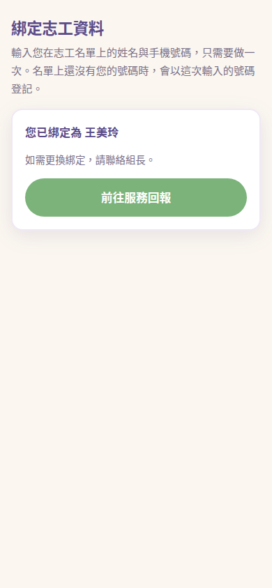
test_bind_flow
tests/e2e/test_liff_flows.py::test_bind_flow[chromium]

test_bind_flow_writes_the_phone_back_when_the_roster_has_none
tests/e2e/test_liff_flows.py::test_bind_flow_writes_the_phone_back_when_the_roster_has_none[chromium]
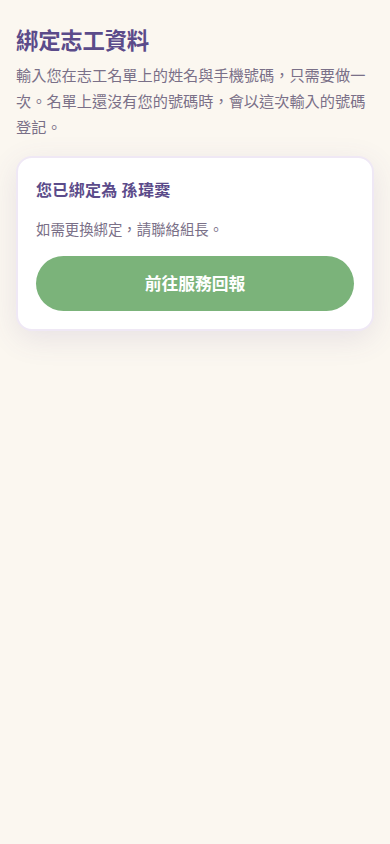
test_bind_page_loads_without_js_errors
tests/e2e/test_liff_flows.py::test_bind_page_loads_without_js_errors[chromium]

test_checkin_unbound_redirects_to_bind
tests/e2e/test_liff_flows.py::test_checkin_unbound_redirects_to_bind[chromium]

test_hours_page_unbound_redirects_to_bind
tests/e2e/test_liff_flows.py::test_hours_page_unbound_redirects_to_bind[chromium]
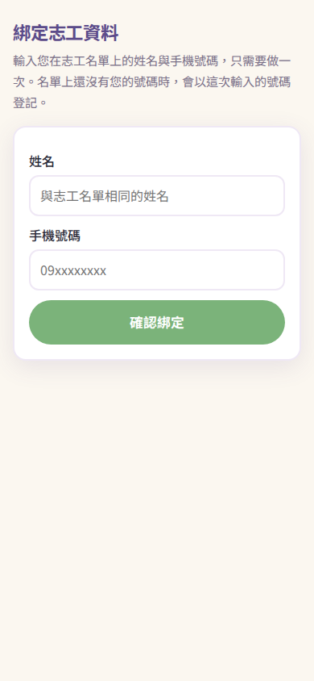
test_bind_not_found_shows_message
tests/e2e/test_liff_flows.py::test_bind_not_found_shows_message[chromium]
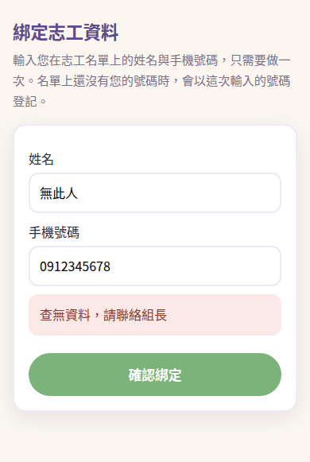
test_attended_question_follows_the_chosen_date
tests/e2e/test_liff_flows.py::test_attended_question_follows_the_chosen_date[chromium]
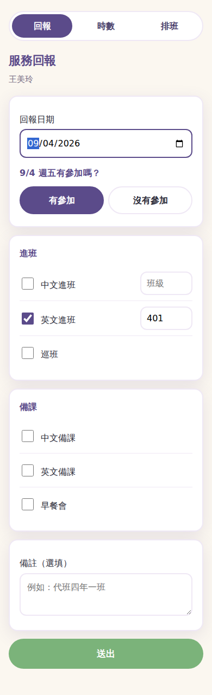
test_checkin_flow_with_schedule_prefill
tests/e2e/test_liff_flows.py::test_checkin_flow_with_schedule_prefill[chromium]
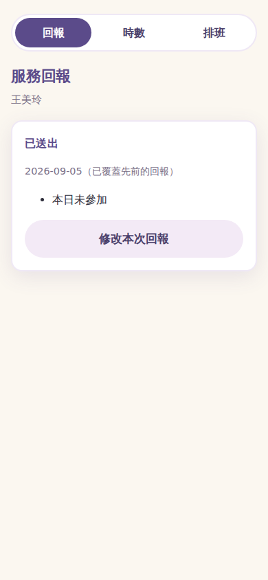
test_checkin_date_param_valid_and_invalid
tests/e2e/test_liff_flows.py::test_checkin_date_param_valid_and_invalid[chromium]
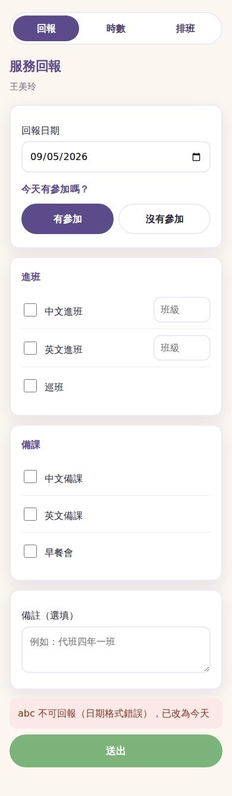
test_checkin_validation_messages
tests/e2e/test_liff_flows.py::test_checkin_validation_messages[chromium]
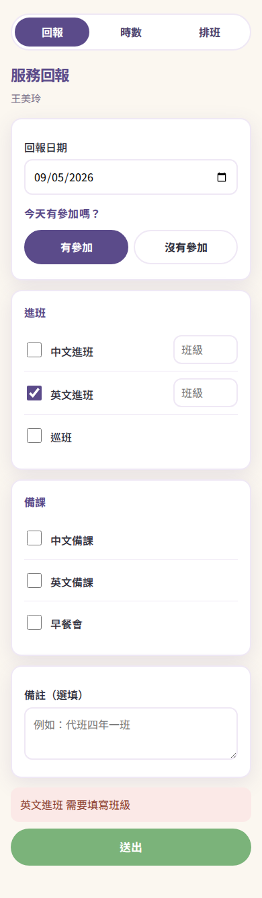
test_future_date_is_refused_and_the_field_goes_back
tests/e2e/test_liff_flows.py::test_future_date_is_refused_and_the_field_goes_back[chromium]
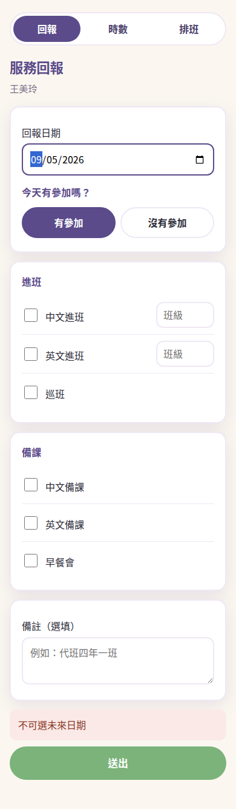
test_hours_page_shows_summary_and_details
tests/e2e/test_liff_flows.py::test_hours_page_shows_summary_and_details[chromium]
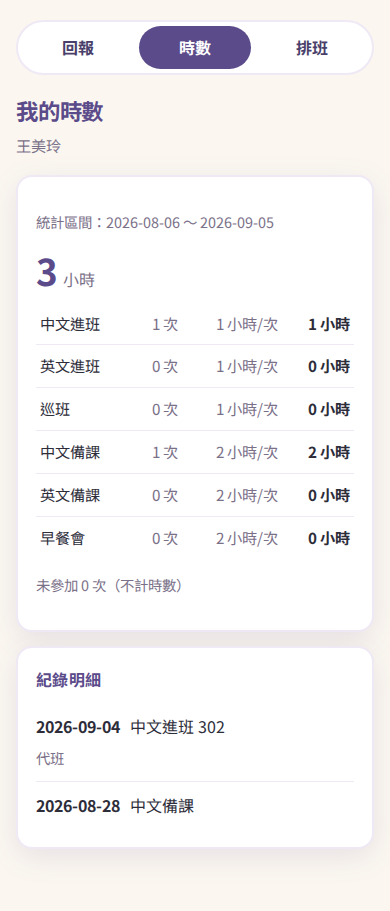
test_hours_page_without_records_or_period
tests/e2e/test_liff_flows.py::test_hours_page_without_records_or_period[chromium]
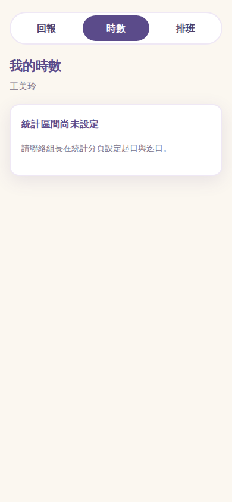
test_schedule_page_statuses_and_backfill_link
tests/e2e/test_liff_flows.py::test_schedule_page_statuses_and_backfill_link[chromium]
test_schedule_page_without_schedule
tests/e2e/test_liff_flows.py::test_schedule_page_without_schedule[chromium]
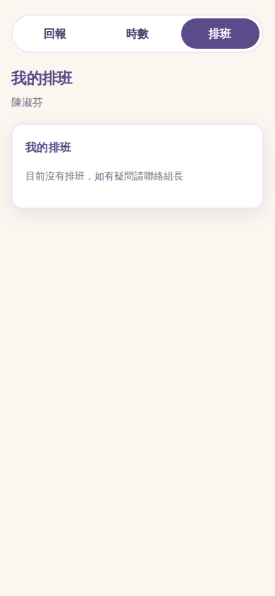
test_checkin_page_param_bind_redirects
tests/e2e/test_liff_flows.py::test_checkin_page_param_bind_redirects[chromium]

test_nav_switches_between_pages_keeping_uid
tests/e2e/test_liff_flows.py::test_nav_switches_between_pages_keeping_uid[chromium]

test_perf_panel_is_absent_without_the_query_param
tests/e2e/test_liff_flows.py::test_perf_panel_is_absent_without_the_query_param[chromium]

test_perf_panel_reports_the_spans_it_measured
tests/e2e/test_liff_flows.py::test_perf_panel_reports_the_spans_it_measured[chromium]
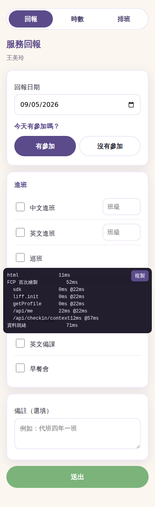
test_perf_panel_survives_the_nav_links
tests/e2e/test_liff_flows.py::test_perf_panel_survives_the_nav_links[chromium]
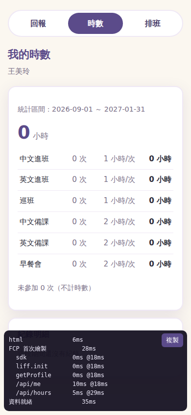
test_the_stylesheet_is_inlined_not_fetched
tests/e2e/test_liff_flows.py::test_the_stylesheet_is_inlined_not_fetched[chromium]
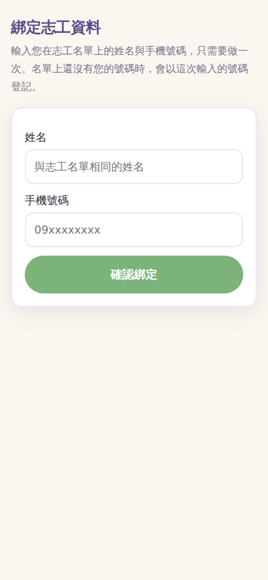
test_a_slow_sdk_is_waited_for_rather_than_missed
tests/e2e/test_liff_sdk_loading.py::test_a_slow_sdk_is_waited_for_rather_than_missed[chromium]
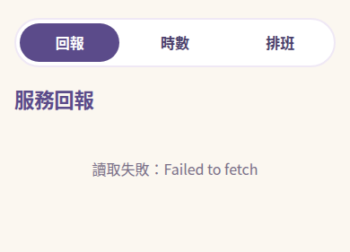
test_the_page_waits_for_the_deferred_sdk_instead_of_crashing
tests/e2e/test_liff_sdk_loading.py::test_the_page_waits_for_the_deferred_sdk_instead_of_crashing[chromium]

test_the_sdk_script_does_not_block_the_first_paint
tests/e2e/test_liff_sdk_loading.py::test_the_sdk_script_does_not_block_the_first_paint[chromium]
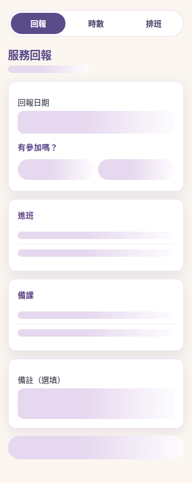
test_the_inlined_css_survives_template_escaping
tests/e2e/test_liff_flows.py::test_the_inlined_css_survives_template_escaping[chromium]

test_an_sdk_that_never_loads_says_so_instead_of_hanging
tests/e2e/test_liff_sdk_loading.py::test_an_sdk_that_never_loads_says_so_instead_of_hanging[chromium]
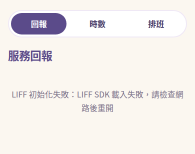
test_expired_id_token_relogins_and_recovers
tests/e2e/test_liff_flows.py::test_expired_id_token_relogins_and_recovers[chromium]
test_relogin_in_line_app_reloads_instead_of_calling_login
tests/e2e/test_liff_flows.py::test_relogin_in_line_app_reloads_instead_of_calling_login[chromium]

test_expired_token_on_submit_keeps_the_form_and_says_so
tests/e2e/test_liff_flows.py::test_expired_token_on_submit_keeps_the_form_and_says_so[chromium]
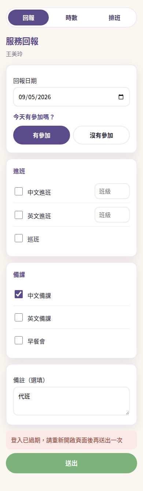
test_expired_token_while_changing_date_keeps_the_form
tests/e2e/test_liff_flows.py::test_expired_token_while_changing_date_keeps_the_form[chromium]
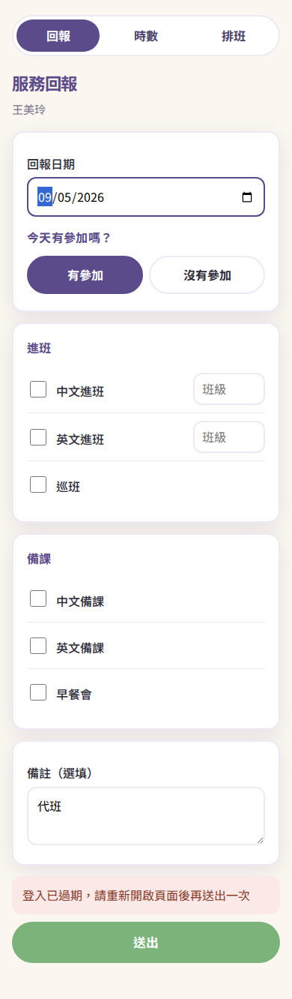
test_later_401_after_a_relogin_does_not_redirect_again
tests/e2e/test_liff_flows.py::test_later_401_after_a_relogin_does_not_redirect_again[chromium]
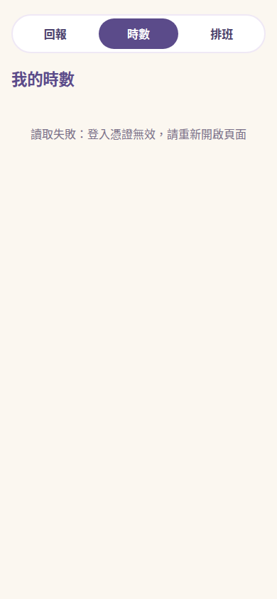
test_relogin_guard_survives_blocked_session_storage
tests/e2e/test_liff_flows.py::test_relogin_guard_survives_blocked_session_storage[chromium]
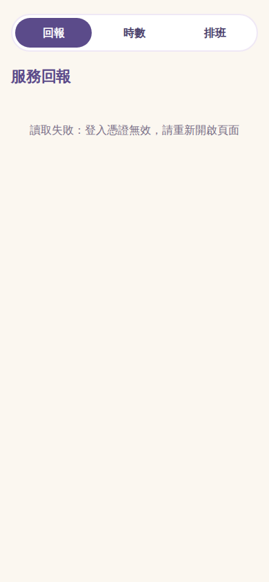
test_relogin_happens_once_then_shows_the_error
tests/e2e/test_liff_flows.py::test_relogin_happens_once_then_shows_the_error[chromium]

test_relogin_in_line_app_stops_after_one_reload
tests/e2e/test_liff_flows.py::test_relogin_in_line_app_stops_after_one_reload[chromium]

test_relogin_mark_is_removed_only_after_liff_init
tests/e2e/test_liff_flows.py::test_relogin_mark_is_removed_only_after_liff_init[chromium]

test_relogin_stops_after_one_try_when_login_never_takes
tests/e2e/test_liff_flows.py::test_relogin_stops_after_one_try_when_login_never_takes[chromium]
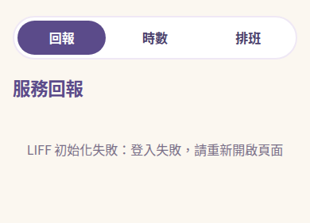
test_shared_url_with_relogin_mark_still_logs_in
tests/e2e/test_liff_flows.py::test_shared_url_with_relogin_mark_still_logs_in[chromium]
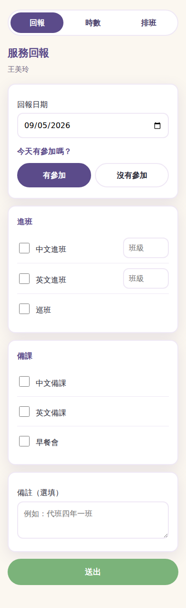
test_the_server_answers_from_the_pinned_clock
tests/e2e/test_clock_pinning.py::test_the_server_answers_from_the_pinned_clock[chromium]
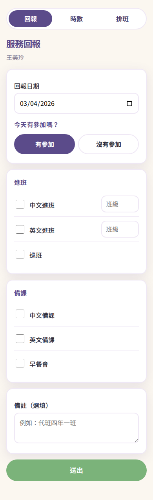
test_fill_alone_sends_change_to_the_date_field
tests/e2e/test_liff_flows.py::test_fill_alone_sends_change_to_the_date_field[chromium]
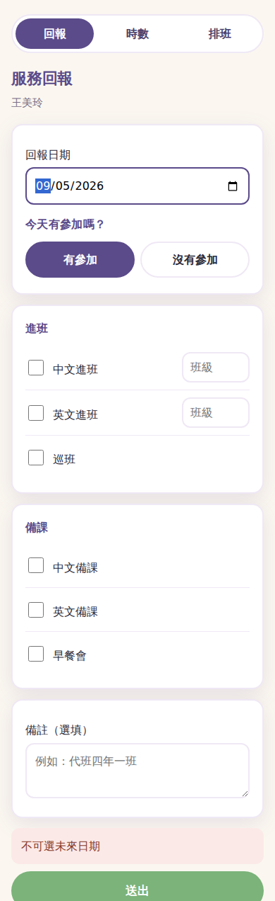
{kind=link}
{kind=link}
{kind=link}
{kind=link}
{kind=link}
{kind=link}
{kind=link}
{kind=link}
{kind=link}
{kind=link}
{kind=link}
{kind=link}
{kind=link}
{kind=link}
{kind=link}
{kind=link}
{kind=link}
{kind=link}
{kind=link}
{kind=link}
{kind=link}
{kind=link}
{kind=link}
{kind=link}
{kind=link}
{kind=link}
{kind=link}